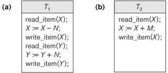
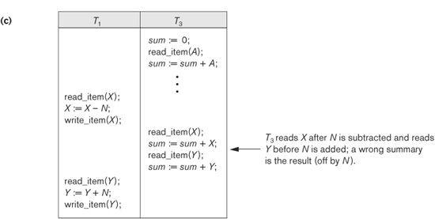
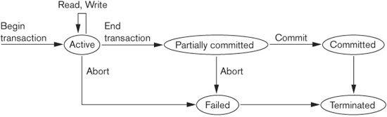
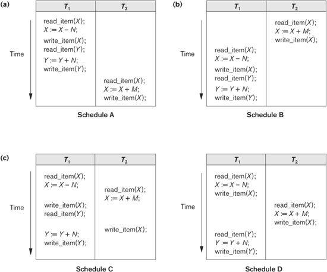
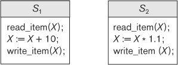
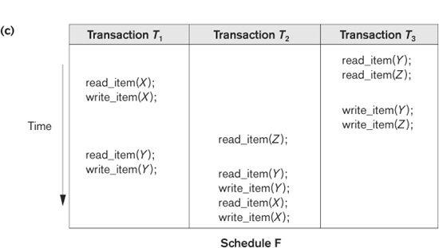
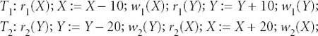
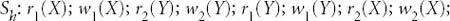
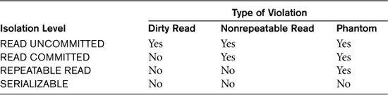

The concept of transaction provides a mechanism for describing logical units of database processing. Transaction processing systems are systems with large databases and hundreds of concurrent users executing database transactions. Examples of such systems include airline reservations, banking, credit card processing, online retail purchasing, stock markets, supermarket checkouts, and many other applications. These systems require high availability and fast response time for hundreds of concurrent users. In this chapter we present the concepts that are needed in transaction processing systems. We define the concept of a transaction, which is used to represent a logical unit of database processing that must be completed in its entirety to ensure correctness. A transaction is typically implemented by a computer program, which includes database commands such as retrievals, insertions, deletions, and updates. We introduced some of the basic techniques for database programming in Chapters 13 and 14.
In this chapter, we focus on the basic concepts and theory that are needed to ensure the correct executions of transactions. We discuss the concurrency control problem, which occurs when multiple transactions submitted by various users interfere with one another in a way that produces incorrect results. We also discuss the problems that can occur when transactions fail, and how the database system can recover from various types of failures.
This chapter is organized as follows. Section 21.1 informally discusses why concurrency control and recovery are necessary in a database system. Section 21.2 defines the term transaction and discusses additional concepts related to transaction processing in database systems. Section 21.3 presents the important properties of atomicity, consistency preservation, isolation, and durability or permanency—called the ACID properties—that are considered desirable in transaction processing systems. Section 21.4 introduces the concept of schedules (or histories) of executing transactions and characterizes the recoverability of schedules. Section 21.5 discusses the notion of serializability of concurrent transaction execution, which can be used to define correct execution sequences (or schedules) of concurrent transactions. In Section 21.6, we present some of the commands that support the transaction concept in SQL. Section 21.7 summarizes the chapter.
The two following chapters continue with more details on the actual methods and techniques used to support transaction processing. Chapter 22 gives an overview of the basic concurrency control protocols and Chapter 23 introduces recovery techniques.
21.1 Introduction to Transaction Processing
In this section we discuss the concepts of concurrent execution of transactions and recovery from transaction failures. Section 21.1.1 compares single-user and multiuser database systems and demonstrates how concurrent execution of transactions can take place in multiuser systems. Section 21.1.2 defines the concept of transaction and presents a simple model of transaction execution based on read and write database operations. This model is used as the basis for defining and formalizing concurrency control and recovery concepts. Section 21.1.3 uses informal examples to show why concurrency control techniques are needed in multiuser systems. Finally, Section 21.1.4 discusses why techniques are needed to handle recovery from system and transaction failures by discussing the different ways in which transactions can fail while executing.
21.1.1 Single-User versus Multiuser Systems
One criterion for classifying a database system is according to the number of users who can use the system concurrently. A DBMS is single-user if at most one user at a time can use the system, and it is multiuser if many users can use the system—and hence access the database—concurrently. Single-user DBMSs are mostly restricted to personal computer systems; most other DBMSs are multiuser. For example, an airline reservations system is used by hundreds of travel agents and reservation clerks concurrently. Database systems used in banks, insurance agencies, stock exchanges, supermarkets, and many other applications are multiuser systems. In these systems, hundreds or thousands of users are typically operating on the database by submitting transactions concurrently to the system.
Multiple users can access databases—and use computer systems—simultaneously because of the concept of multiprogramming, which allows the operating system of the computer to execute multiple programs—or processes—at the same time. A single central processing unit (CPU) can only execute at most one process at a time. However, multiprogramming operating systems execute some commands from one process, then suspend that process and execute some commands from the next process, and so on. A process is resumed at the point where it was suspended whenever it gets its turn to use the CPU again. Hence, concurrent execution of processes is actually interleaved, as illustrated in Figure 21.1, which shows two processes, A and B, executing concurrently in an interleaved fashion. Interleaving keeps the CPU busy when a process requires an input or output (I/O) operation, such as reading a block from disk. The CPU is switched to execute another process rather than remaining idle during I/O time. Interleaving also prevents a long process from delaying other processes.
Figure 21.1
Interleaved processing
versus parallel processing of concurrent transactions.
If the computer system has multiple hardware processors (CPUs), parallel processing of multiple processes is possible, as illustrated by processes C and D in Figure 21.1. Most of the theory concerning concurrency control in databases is developed in terms of interleaved concurrency, so for the remainder of this chapter we assume this model. In a multiuser DBMS, the stored data items are the primary resources that may be accessed concurrently by interactive users or application programs, which are constantly retrieving information from and modifying the database.
21.1.2 Transactions, Database Items, Read and Write Operations, and DBMS Buffers
A transaction is an executing program that forms a logical unit of database processing. A transaction includes one or more database access operations—these can include insertion, deletion, modification, or retrieval operations. The database operations that form a transaction can either be embedded within an application program or they can be specified interactively via a high-level query language such as SQL. One way of specifying the transaction boundaries is by specifying explicit begin transaction and end transaction statements in an application program; in this case, all database access operations between the two are considered as forming one transaction. A single application program may contain more than one transaction if it contains several transaction boundaries. If the database operations in a transaction do not update the database but only retrieve data, the transaction is called a read-only transaction; otherwise it is known as a read-write transaction.
The database model that is used to present transaction processing concepts is quite simple when compared to the data models that we discussed earlier in the book, such as the relational model or the object model. A database is basically represented as a collection of named data items. The size of a data item is called its granularity. A data item can be a database record, but it can also be a larger unit such as a whole disk block, or even a smaller unit such as an individual field (attribute) value of some record in the database. The transaction processing concepts we discuss are independent of the data item granularity (size) and apply to data items in general. Each data item has a unique name, but this name is not typically used by the programmer; rather, it is just a means to uniquely identify each data item. For example, if the data item granularity is one disk block, then the disk block address can be used as the data item name. Using this simplified database model, the basic database access operations that a transaction can include are as follows:
read_item (X). Reads a database item named X into a program variable. To simplify our notation, we assume that the program variable is also named X.
write_item (X). Writes the value of program variable X into the database item named X.
As we discussed in Chapter 17, the basic unit of data transfer from disk to main memory is one block. Executing a read_item(X) command includes the following steps:
1. Find the address of the disk block that contains item X.
2. Copy that disk block into a buffer in main memory (if that disk block is not already in some main memory buffer).
3. Copy item X from the buffer to the program variable named X.
Executing a write_item(X) command includes the following steps:
1. Find the address of the disk block that contains item X.
2. Copy that disk block into a buffer in main memory (if that disk block is not already in some main memory buffer).
3. Copy item X from the program variable named X into its correct location in the buffer.
4. Store the updated block from the buffer back to disk (either immediately or at some later point in time).
It is step 4 that actually updates the database on disk. In some cases the buffer is not immediately stored to disk, in case additional changes are to be made to the buffer. Usually, the decision about when to store a modified disk block whose contents are in a main memory buffer is handled by the recovery manager of the DBMS in cooperation with the underlying operating system. The DBMS will maintain in the database cache a number of data buffers in main memory. Each buffer typically holds the contents of one database disk block, which contains some of the database items being processed. When these buffers are all occupied, and additional database disk blocks must be copied into memory, some buffer replacement policy is used to choose which of the current buffers is to be replaced. If the chosen buffer has been modified, it must be written back to disk before it is reused.1
A transaction includes read_item and write_item operations to access and update the database. Figure 21.2 shows examples of two very simple transactions. The read-set of a transaction is the set of all items that the transaction reads, and the write-set is the set of all items that the transaction writes. For example, the read-set of T1 in Figure 21.2 is {X, Y} and its write-set is also {X, Y}.
Concurrency control and recovery mechanisms are mainly concerned with the database commands in a transaction. Transactions submitted by the various users may execute concurrently and may access and update the same database items. If this concurrent execution is uncontrolled, it may lead to problems, such as an inconsistent database. In the next section we informally introduce some of the problems that may occur.
21.1.3 Why Concurrency Control Is Needed
Several problems can occur when concurrent transactions execute in an uncontrolled manner. We illustrate some of these problems by referring to a much simplified airline reservations database in which a record is stored for each airline flight. Each record includes the number of reserved seats on that flight as a named (uniquely identifiable) data item, among other information. Figure 21.2(a) shows a transaction T1 that transfers N reservations from one flight whose number of reserved seats is stored in the database item named X to another flight whose number of reserved seats is stored in the database item named Y. Figure 21.2(b) shows a simpler transaction T2 that just reserves M seats on the first flight (X) referenced in transaction T1.2 To simplify our example, we do not show additional portions of the transactions, such as checking whether a flight has enough seats available before reserving additional seats.

Figure 21.2
Two sample transactions. (a) Transaction
T1. (b) Transaction T2.
When a database access program is written, it has the flight number, flight date, and the number of seats to be booked as parameters; hence, the same program can be used to execute many different transactions, each with a different flight number, date, and number of seats to be booked. For concurrency control purposes, a transaction is a particular execution of a program on a specific date, flight, and number of seats. In Figure 21.2(a) and (b), the transactions T1 and T2 are specific executions of the programs that refer to the specific flights whose numbers of seats are stored in data items X and Y in the database. Next we discuss the types of problems we may encounter with these two simple transactions if they run concurrently.
The Lost Update Problem. This problem occurs when two transactions that access the same database items have their operations interleaved in a way that makes the value of some database items incorrect. Suppose that transactions T1 and T2 are submitted at approximately the same time, and suppose that their operations are interleaved as shown in Figure 21.3(a); then the final value of item X is incorrect because T2 reads the value of X before T1 changes it in the database, and hence the updated value resulting from T1 is lost. For example, if X = 80 at the start (originally there were 80 reservations on the flight), N = 5 (T1 transfers 5 seat reservations from the flight corresponding to X to the flight corresponding to Y), and M = 4 (T2 reserves 4 seats on X), the final result should be X = 79. However, in the interleaving of operations shown in Figure 21.3(a), it is X = 84 because the update in T1 that removed the five seats from X was lost.
The Temporary Update (or Dirty Read) Problem. This problem occurs when one transaction updates a database item and then the transaction fails for some reason (see Section 21.1.4). Meanwhile, the updated item is accessed (read) by another transaction before it is changed back to its original value. Figure 21.3(b) shows an example where T1 updates item X and then fails before completion, so the system must change X back to its original value. Before it can do so, however, transaction T2 reads the temporary value of X, which will not be recorded permanently in the database because of the failure of T1. The value of item X that is read by T2 is called dirty data because it has been created by a transaction that has not completed and committed yet; hence, this problem is also known as the dirty read problem.
The Incorrect Summary Problem. If one transaction is calculating an aggregate summary function on a number of database items while other transactions are updating some of these items, the aggregate function may calculate some values before they are updated and others after they are updated. For example, suppose that a transaction T3 is calculating the total number of reservations on all the flights; meanwhile, transaction T1 is executing. If the interleaving of operations shown in Figure 21.3(c) occurs, the result of T3 will be off by an amount N because T3 reads the value of X after N seats have been subtracted from it but reads the value of Y before those N seats have been added to it.

Figure 21.3
Some problems that occur
when concurrent execution is uncontrolled. (a) The lost update problem. (b) The temporary update problem. (c)
The incorrect summary problem.
The Unrepeatable Read Problem. Another problem that may occur is called unrepeatable read, where a transaction T reads the same item twice and the item is changed by another transaction T’ between the two reads. Hence, T receives different values for its two reads of the same item. This may occur, for example, if during an airline reservation transaction, a customer inquires about seat availability on several flights. When the customer decides on a particular flight, the transaction then reads the number of seats on that flight a second time before completing the reservation, and it may end up reading a different value for the item.
21.1.4 Why Recovery Is Needed
Whenever a transaction is submitted to a DBMS for execution, the system is responsible for making sure that either all the operations in the transaction are completed successfully and their effect is recorded permanently in the database, or that the transaction does not have any effect on the database or any other transactions. In the first case, the transaction is said to be committed, whereas in the second case, the transaction is aborted. The DBMS must not permit some operations of a transaction T to be applied to the database while other operations of T are not, because the whole transaction is a logical unit of database processing. If a transaction fails after executing some of its operations but before executing all of them, the operations already executed must be undone and have no lasting effect.
Types of Failures. Failures are generally classified as transaction, system, and media failures. There are several possible reasons for a transaction to fail in the middle of execution:
1. A computer failure (system crash). A hardware, software, or network error occurs in the computer system during transaction execution. Hardware crashes are usually media failures—for example, main memory failure.
2. A transaction or system error. Some operation in the transaction may cause it to fail, such as integer overflow or division by zero. Transaction failure may also occur because of erroneous parameter values or because of a logical programming error.3 Additionally, the user may interrupt the transaction during its execution.
3. Local errors or exception conditions detected by the transaction. During transaction execution, certain conditions may occur that necessitate cancellation of the transaction. For example, data for the transaction may not be found. An exception condition,4 such as insufficient account balance in a banking database, may cause a transaction, such as a fund withdrawal, to be canceled. This exception could be programmed in the transaction itself, and in such a case would not be considered as a transaction failure.
4. Concurrency control enforcement. The concurrency control method (see Chapter 22) may decide to abort a transaction because it violates serializability (see Section 21.5), or it may abort one or more transactions to resolve a state of deadlock among several transactions (see Section 22.1.3). Transactions aborted because of serializability violations or deadlocks are typically restarted automatically at a later time.
5. Disk failure. Some disk blocks may lose their data because of a read or write malfunction or because of a disk read/write head crash. This may happen during a read or a write operation of the transaction.
6. Physical problems and catastrophes. This refers to an endless list of problems that includes power or air-conditioning failure, fire, theft, sabotage, overwriting disks or tapes by mistake, and mounting of a wrong tape by the operator.
Failures of types 1, 2, 3, and 4 are more common than those of types 5 or 6. Whenever a failure of type 1 through 4 occurs, the system must keep sufficient information to quickly recover from the failure. Disk failure or other catastrophic failures of type 5 or 6 do not happen frequently; if they do occur, recovery is a major task. We discuss recovery from failure in Chapter 23.
The concept of transaction is fundamental to many techniques for concurrency control and recovery from failures.
21.2 Transaction and System Concepts
In this section we discuss additional concepts relevant to transaction processing. Section 21.2.1 describes the various states a transaction can be in, and discusses other operations needed in transaction processing. Section 21.2.2 discusses the system log, which keeps information about transactions and data items that will be needed for recovery. Section 21.2.3 describes the concept of commit points of transactions, and why they are important in transaction processing.
21.2.1 Transaction States and Additional Operations
A transaction is an atomic unit of work that should either be completed in its entirety or not done at all. For recovery purposes, the system needs to keep track of when each transaction starts, terminates, and commits or aborts (see Section 21.2.3). Therefore, the recovery manager of the DBMS needs to keep track of the following operations:
BEGIN_TRANSACTION. This marks the beginning of transaction execution.
READ or WRITE. These specify read or write operations on the database items that are executed as part of a transaction.
END_TRANSACTION. This specifies that READ and WRITE transaction operations have ended and marks the end of transaction execution. However, at this point it may be necessary to check whether the changes introduced by the transaction can be permanently applied to the database (committed) or whether the transaction has to be aborted because it violates serializability (see Section 21.5) or for some other reason.
COMMIT_TRANSACTION. This signals a successful end of the transaction so that any changes (updates) executed by the transaction can be safely committed to the database and will not be undone.
ROLLBACK (or ABORT). This signals that the transaction has ended unsuccessfully, so that any changes or effects that the transaction may have applied to the database must be undone.
Figure 21.4 shows a state transition diagram that illustrates how a transaction moves through its execution states. A transaction goes into an active state immediately after it starts execution, where it can execute its READ and WRITE operations. When the transaction ends, it moves to the partially committed state. At this point, some recovery protocols need to ensure that a system failure will not result in an inability to record the changes of the transaction permanently (usually by recording changes in the system log, discussed in the next section).5 Once this check is successful, the transaction is said to have reached its commit point and enters the committed state. Commit points are discussed in more detail in Section 21.2.3. When a transaction is committed, it has concluded its execution successfully and all its changes must be recorded permanently in the database, even if a system failure occurs.
However, a transaction can go to the failed state if one of the checks fails or if the transaction is aborted during its active state. The transaction may then have to be rolled back to undo the effect of its WRITE operations on the database. The terminated state corresponds to the transaction leaving the system. The transaction information that is maintained in system tables while the transaction has been running is removed when the transaction terminates. Failed or aborted transactions may be restarted later—either automatically or after being resubmitted by the user—as brand new transactions.

Figure 21.4
State transition diagram illustrating the states for transaction execution.
21.2.2 The System Log
To be able to recover from failures that affect transactions, the system maintains a log6 to keep track of all transaction operations that affect the values of database items, as well as other transaction information that may be needed to permit recovery from failures. The log is a sequential, append-only file that is kept on disk, so it is not affected by any type of failure except for disk or catastrophic failure. Typically, one (or more) main memory buffers hold the last part of the log file, so that log entries are first added to the main memory buffer. When the log buffer is filled, or when certain other conditions occur, the log buffer is appended to the end of the log file on disk. In addition, the log file from disk is periodically backed up to archival storage (tape) to guard against catastrophic failures. The following are the types of entries—called log records—that are written to the log file and the corresponding action for each log record. In these entries, T refers to a unique transaction-id that is generated automatically by the system for each transaction and that is used to identify each transaction:
1. [start_transaction, T]. Indicates that transaction T has started execution.
2. [write_item, T, X, old_value, new_value]. Indicates that transaction T has changed the value of database item X from old_value to new_value.
3. [read_item, T, X]. Indicates that transaction T has read the value of database item X.
4. [commit, T]. Indicates that transaction T has completed successfully, and affirms that its effect can be committed (recorded permanently) to the database.
5. [abort, T]. Indicates that transaction T has been aborted.
Protocols for recovery that avoid cascading rollbacks (see Section 21.4.2)—which include nearly all practical protocols—do not require that READ operations are written to the system log. However, if the log is also used for other purposes—such as auditing (keeping track of all database operations)—then such entries can be included. Additionally, some recovery protocols require simpler WRITE entries only include one of new_value and old_value instead of including both (see Section 21.4.2).
Notice that we are assuming that all permanent changes to the database occur within transactions, so the notion of recovery from a transaction failure amounts to either undoing or redoing transaction operations individually from the log. If the system crashes, we can recover to a consistent database state by examining the log and using one of the techniques described in Chapter 23. Because the log contains a record of every WRITE operation that changes the value of some database item, it is possible to undo the effect of these WRITE operations of a transaction T by tracing backward through the log and resetting all items changed by a WRITE operation of T to their old_values. Redo of an operation may also be necessary if a transaction has its updates recorded in the log but a failure occurs before the system can be sure that all these new_values have been written to the actual database on disk from the main memory buffers.7
21.2.3 Commit Point of a Transaction
A transaction T reaches its commit point when all its operations that access the database have been executed successfully and the effect of all the transaction operations on the database have been recorded in the log. Beyond the commit point, the transaction is said to be committed, and its effect must be permanently recorded in the database. The transaction then writes a commit record [commit, T] into the log. If a system failure occurs, we can search back in the log for all transactions T that have written a [start_transaction, T] record into the log but have not written their [commit, T] record yet; these transactions may have to be rolled back to undo their effect on the database during the recovery process. Transactions that have written their commit record in the log must also have recorded all their WRITE operations in the log, so their effect on the database can be redone from the log records.
Notice that the log file must be kept on disk. As discussed in Chapter 17, updating a disk file involves copying the appropriate block of the file from disk to a buffer in main memory, updating the buffer in main memory, and copying the buffer to disk. It is common to keep one or more blocks of the log file in main memory buffers, called the log buffer, until they are filled with log entries and then to write them back to disk only once, rather than writing to disk every time a log entry is added. This saves the overhead of multiple disk writes of the same log file buffer. At the time of a system crash, only the log entries that have been written back to disk are considered in the recovery process because the contents of main memory may be lost. Hence, before a transaction reaches its commit point, any portion of the log that has not been written to the disk yet must now be written to the disk. This process is called force-writing the log buffer before committing a transaction.
21.3 Desirable Properties of Transactions
Transactions should possess several properties, often called the ACID properties; they should be enforced by the concurrency control and recovery methods of the DBMS. The following are the ACID properties:
Atomicity. A transaction is an atomic unit of processing; it should either be performed in its entirety or not performed at all.
Consistency preservation. A transaction should be consistency preserving, meaning that if it is completely executed from beginning to end without interference from other transactions, it should take the database from one consistent state to another.
Isolation. A transaction should appear as though it is being executed in isolation from other transactions, even though many transactions are executing concurrently. That is, the execution of a transaction should not be interfered with by any other transactions executing concurrently.
Durability or permanency. The changes applied to the database by a committed transaction must persist in the database. These changes must not be lost because of any failure.
The atomicity property requires that we execute a transaction to completion. It is the responsibility of the transaction recovery subsystem of a DBMS to ensure atomicity. If a transaction fails to complete for some reason, such as a system crash in the midst of transaction execution, the recovery technique must undo any effects of the transaction on the database. On the other hand, write operations of a committed transaction must be eventually written to disk.
The preservation of consistency is generally considered to be the responsibility of the programmers who write the database programs or of the DBMS module that enforces integrity constraints. Recall that a database state is a collection of all the stored data items (values) in the database at a given point in time. A consistent state of the database satisfies the constraints specified in the schema as well as any other constraints on the database that should hold. A database program should be written in a way that guarantees that, if the database is in a consistent state before executing the transaction, it will be in a consistent state after the complete execution of the transaction, assuming that no interference with other transactions occurs.
The isolation property is enforced by the concurrency control subsystem of the DBMS.8 If every transaction does not make its updates (write operations) visible to other transactions until it is committed, one form of isolation is enforced that solves the temporary update problem and eliminates cascading rollbacks (see Chapter 23) but does not eliminate all other problems. There have been attempts to define the level of isolation of a transaction. A transaction is said to have level 0 (zero) isolation if it does not overwrite the dirty reads of higher-level transactions. Level 1 (one) isolation has no lost updates, and level 2 isolation has no lost updates and no dirty reads. Finally, level 3 isolation (also called true isolation) has, in addition to level 2 properties, repeatable reads.9
And last, the durability property is the responsibility of the recovery subsystem of the DBMS. We will introduce how recovery protocols enforce durability and atomicity in the next section and then discuss this in more detail in Chapter 23.
21.4 Characterizing Schedules Based on Recoverability
When transactions are executing concurrently in an interleaved fashion, then the order of execution of operations from all the various transactions is known as a schedule (or history). In this section, first we define the concept of schedules, and then we characterize the types of schedules that facilitate recovery when failures occur. In Section 21.5, we characterize schedules in terms of the interference of participating transactions, leading to the concepts of serializability and serializable schedules.
21.4.1 Schedules (Histories) of Transactions
A schedule (or history) S of n transactions T1, T2, ..., Tn is an ordering of the operations of the transactions. Operations from different transactions can be interleaved in the schedule S. However, for each transaction Ti that participates in the schedule S, the operations of Ti in S must appear in the same order in which they occur in Ti. The order of operations in S is considered to be a total ordering, meaning that for any two operations in the schedule, one must occur before the other. It is possible theoretically to deal with schedules whose operations form partial orders (as we discuss later), but we will assume for now total ordering of the operations in a schedule.
For the purpose of recovery and concurrency control, we are mainly interested in the read_item and write_item operations of the transactions, as well as the commit and abort operations. A shorthand notation for describing a schedule uses the symbols b, r, w, e, c, and a for the operations begin_transaction, read_item, write_item, end_transaction, commit, and abort, respectively, and appends as a subscript the transaction id (transaction number) to each operation in the schedule. In this notation, the database item X that is read or written follows the r and w operations in parentheses. In some schedules, we will only show the read and write operations, whereas in other schedules, we will show all the operations. For example, the schedule in Figure 21.3(a), which we shall call Sa, can be written as follows in this notation:
Sa: r1(X); r2(X); w1(X); r1(Y); w2(X); w1(Y);
Similarly, the schedule for Figure 21.3(b), which we call Sb, can be written as follows, if we assume that transaction T1 aborted after its read_item(Y) operation:
Sb: r1(X); w1(X); r2(X); w2(X); r1(Y); a1;
Two operations in a schedule are said to conflict if they satisfy all three of the following conditions: (1) they belong to different transactions; (2) they access the same item X; and (3) at least one of the operations is a write_item(X). For example, in schedule Sa, the operations r1(X) and w2(X) conflict, as do the operations r2(X) and w1(X), and the operations w1(X) and w2(X). However, the operations r1(X) and r2(X) do not conflict, since they are both read operations; the operations w2(X) and w1(Y) do not conflict because they operate on distinct data items X and Y; and the operations r1(X) and w1(X) do not conflict because they belong to the same transaction.
Intuitively, two operations are conflicting if changing their order can result in a different outcome. For example, if we change the order of the two operations r1(X); w2(X) to w2(X); r1(X), then the value of X that is read by transaction T1 changes, because in the second order the value of X is changed by w2(X) before it is read by r1(X), whereas in the first order the value is read before it is changed. This is called a read-write conflict. The other type is called a write-write conflict, and is illustrated by the case where we change the order of two operations such as w1(X); w2(X) to w2(X); w1(X). For a write-write conflict, the last value of X will differ because in one case it is written by T2 and in the other case by T1. Notice that two read operations are not conflicting because changing their order makes no difference in outcome.
The rest of this section covers some theoretical definitions concerning schedules. A schedule S of n transactions T1, T2, ..., Tn is said to be a complete schedule if the following conditions hold:
1. The operations in S are exactly those operations in T1, T2, ..., Tn, including a commit or abort operation as the last operation for each transaction in the schedule.
2. For any pair of operations from the same transaction Ti, their relative order of appearance in S is the same as their order of appearance in Ti.
3. For any two conflicting operations, one of the two must occur before the other in the schedule.10
The preceding condition (3) allows for two nonconflicting operations to occur in the schedule without defining which occurs first, thus leading to the definition of a schedule as a partial order of the operations in the n transactions.11 However, a total order must be specified in the schedule for any pair of conflicting operations (condition 3) and for any pair of operations from the same transaction (condition 2). Condition 1 simply states that all operations in the transactions must appear in the complete schedule. Since every transaction has either committed or aborted, a complete schedule will not contain any active transactions at the end of the schedule.
In general, it is difficult to encounter complete schedules in a transaction processing system because new transactions are continually being submitted to the system. Hence, it is useful to define the concept of the committed projection C(S) of a schedule S, which includes only the operations in S that belong to committed transactions—that is, transactions Ti whose commit operation ci is in S.
21.4.2 Characterizing Schedules Based on Recoverability
For some schedules it is easy to recover from transaction and system failures, whereas for other schedules the recovery process can be quite involved. In some cases, it is even not possible to recover correctly after a failure. Hence, it is important to characterize the types of schedules for which recovery is possible, as well as those for which recovery is relatively simple. These characterizations do not actually provide the recovery algorithm; they only attempt to theoretically characterize the different types of schedules.
First, we would like to ensure that, once a transaction T is committed, it should never be necessary to roll back T. This ensures that the durability property of transactions is not violated (see Section 21.3). The schedules that theoretically meet this criterion are called recoverable schedules; those that do not are called nonrecoverable and hence should not be permitted by the DBMS. The definition of recoverable schedule is as follows: A schedule S is recoverable if no transaction T in S commits until all transactions T’ that have written some item X that T reads have committed. A transaction T reads from transaction T′ in a schedule S if some item X is first written by T′ and later read by T′. In addition, T′ should not have been aborted before T reads item X, and there should be no transactions that write X after T′ writes it and before T reads it (unless those transactions, if any, have aborted before T reads X).
Some recoverable schedules may require a complex recovery process as we shall see, but if sufficient information is kept (in the log), a recovery algorithm can be devised for any recoverable schedule. The (partial) schedules Sa and Sb from the preceding section are both recoverable, since they satisfy the above definition. Consider the schedule Sa′ given below, which is the same as schedule Sa except that two commit operations have been added to Sa:
Sa’: r1(X); r2(X); w1(X); r1(Y); w2(X); c2; w1(Y); c1;
Sa′ is recoverable, even though it suffers from the lost update problem; this problem is handled by serializability theory (see Section 21.5). However, consider the two (partial) schedules Sc and Sd that follow:
Sc: r1(X); w1(X); r2(X); r1(Y); w2(X); c2; a1;
Sd: r1(X); w1(X); r2(X); r1(Y); w2(X); w1(Y); c1; c2;
Se: r1(X); w1(X); r2(X); r1(Y); w2(X); w1(Y); a1; a2;
Sc is not recoverable because T2 reads item X from T1, but T2 commits before T1 commits. The problem occurs if T1 aborts after the c2 operation in Sc, then the value of X that T2 read is no longer valid and T2 must be aborted after it is committed, leading to a schedule that is not recoverable. For the schedule to be recoverable, the c2 operation in Sc must be postponed until after T1 commits, as shown in Sd. If T1 aborts instead of committing, then T2 should also abort as shown in Se, because the value of X it read is no longer valid. In Se, aborting T2 is acceptable since it has not committed yet, which is not the case for the nonrecoverable schedule Sc.
In a recoverable schedule, no committed transaction ever needs to be rolled back, and so the definition of committed transaction as durable is not violated. However, it is possible for a phenomenon known as cascading rollback (or cascading abort) to occur in some recoverable schedules, where an uncommitted transaction has to be rolled back because it read an item from a transaction that failed. This is illustrated in schedule Se, where transaction T2 has to be rolled back because it read item X from T1, and T1 then aborted.
Because cascading rollback can be quite time-consuming—since numerous transactions can be rolled back (see Chapter 23)—it is important to characterize the schedules where this phenomenon is guaranteed not to occur. A schedule is said to be cascadeless, or to avoid cascading rollback, if every transaction in the schedule reads only items that were written by committed transactions. In this case, all items read will not be discarded, so no cascading rollback will occur. To satisfy this criterion, the r2(X) command in schedules Sd and Se must be postponed until after T1 has committed (or aborted), thus delaying T2 but ensuring no cascading rollback if T1 aborts.
Finally, there is a third, more restrictive type of schedule, called a strict schedule, in which transactions can neither read nor write an item X until the last transaction that wrote X has committed (or aborted). Strict schedules simplify the recovery process. In a strict schedule, the process of undoing a write_item(X) operation of an aborted transaction is simply to restore the before image (old_value or BFIM) of data item X. This simple procedure always works correctly for strict schedules, but it may not work for recoverable or cascadeless schedules. For example, consider schedule Sf:
Sf: w1(X, 5); w2(X, 8); a1;
Suppose that the value of X was originally 9, which is the before image stored in the system log along with the w1(X, 5) operation. If T1 aborts, as in Sf, the recovery procedure that restores the before image of an aborted write operation will restore the value of X to 9, even though it has already been changed to 8 by transaction T2, thus leading to potentially incorrect results. Although schedule Sf is cascadeless, it is not a strict schedule, since it permits T2 to write item X even though the transaction T1 that last wrote X had not yet committed (or aborted). A strict schedule does not have this problem.
It is important to note that any strict schedule is also cascadeless, and any cascadeless schedule is also recoverable. Suppose we have i transactions T1, T2, ..., Ti, and their number of operations are n1, n2, ..., ni, respectively. If we make a set of all possible schedules of these transactions, we can divide the schedules into two disjoint subsets: recoverable and nonrecoverable. The cascadeless schedules will be a subset of the recoverable schedules, and the strict schedules will be a subset of the cascadeless schedules. Thus, all strict schedules are cascadeless, and all cascadeless schedules are recoverable.
21.5 Characterizing Schedules Based on Serializability
In the previous section, we characterized schedules based on their recoverability properties. Now we characterize the types of schedules that are always considered to be correct when concurrent transactions are executing. Such schedules are known as serializable schedules. Suppose that two users—for example, two airline reservations agents—submit to the DBMS transactions T1 and T2 in Figure 21.2 at approximately the same time. If no interleaving of operations is permitted, there are only two possible outcomes:
1. Execute all the operations of transaction T1 (in sequence) followed by all the operations of transaction T2 (in sequence).
2. Execute all the operations of transaction T2 (in sequence) followed by all the operations of transaction T1 (in sequence).
These two schedules—called serial schedules—are shown in Figure 21.5(a) and (b), respectively. If interleaving of operations is allowed, there will be many possible orders in which the system can execute the individual operations of the transactions. Two possible schedules are shown in Figure 21.5(c). The concept of serializability of schedules is used to identify which schedules are correct when transaction executions have interleaving of their operations in the schedules. This section defines serializability and discusses how it may be used in practice.

Figure 21.5
Examples of serial and nonserial schedules involving transactions T1 and T2. (a) Serial schedule A: T1
followed by T2. (b) Serial schedule B: T2 followed by T1. (c) Two nonserial schedules C and D with interleaving of operations.
21.5.1 Serial, Nonserial, and Conflict-Serializable Schedules
Schedules A and B in Figure 21.5(a) and (b) are called serial because the operations of each transaction are executed consecutively, without any interleaved operations from the other transaction. In a serial schedule, entire transactions are performed in serial order: T1 and then T2 in Figure 21.5(a), and T2 and then T1 in Figure 21.5(b). Schedules C and D in Figure 21.5(c) are called nonserial because each sequence interleaves operations from the two transactions.
Formally, a schedule S is serial if, for every transaction T participating in the schedule, all the operations of T are executed consecutively in the schedule; otherwise, the schedule is called nonserial. Therefore, in a serial schedule, only one transaction at a time is active—the commit (or abort) of the active transaction initiates execution of the next transaction. No interleaving occurs in a serial schedule. One reasonable assumption we can make, if we consider the transactions to be independent, is that every serial schedule is considered correct. We can assume this because every transaction is assumed to be correct if executed on its own (according to the consistency preservation property of Section 21.3). Hence, it does not matter which transaction is executed first. As long as every transaction is executed from beginning to end in isolation from the operations of other transactions, we get a correct end result on the database.
The problem with serial schedules is that they limit concurrency by prohibiting interleaving of operations. In a serial schedule, if a transaction waits for an I/O operation to complete, we cannot switch the CPU processor to another transaction, thus wasting valuable CPU processing time. Additionally, if some transaction T is quite long, the other transactions must wait for T to complete all its operations before starting. Hence, serial schedules are considered unacceptable in practice. However, if we can determine which other schedules are equivalent to a serial schedule, we can allow these schedules to occur.
To illustrate our discussion, consider the schedules in Figure 21.5, and assume that the initial values of database items are X = 90 and Y = 90 and that N = 3 and M = 2. After executing transactions T1 and T2, we would expect the database values to be X= 89 and Y = 93, according to the meaning of the transactions. Sure enough, executing either of the serial schedules A or B gives the correct results. Now consider the nonserial schedules C and D. Schedule C (which is the same as Figure 21.3(a)) gives the results X = 92 and Y = 93, in which the X value is erroneous, whereas schedule D gives the correct results.
Schedule C gives an erroneous result because of the lost update problem discussed in Section 21.1.3; transaction T2 reads the value of X before it is changed by transaction T1, so only the effect of T2 on X is reflected in the database. The effect of T1 on X is lost, overwritten by T2, leading to the incorrect result for item X. However, some nonserial schedules give the correct expected result, such as schedule D. We would like to determine which of the nonserial schedules always give a correct result and which may give erroneous results. The concept used to characterize schedules in this manner is that of serializability of a schedule.
The definition of serializable schedule is as follows: A schedule S of n transactions is serializable if it is equivalent to some serial schedule of the same n transactions. We will define the concept of equivalence of schedules shortly. Notice that there are n! possible serial schedules of n transactions and many more possible nonserial schedules. We can form two disjoint groups of the nonserial schedules—those that are equivalent to one (or more) of the serial schedules and hence are serializable, and those that are not equivalent to any serial schedule and hence are not serializable.
Saying that a nonserial schedule S is serializable is equivalent to saying that it is correct, because it is equivalent to a serial schedule, which is considered correct. The remaining question is: When are two schedules considered equivalent?
There are several ways to define schedule equivalence. The simplest but least satisfactory definition involves comparing the effects of the schedules on the database. Two schedules are called result equivalent if they produce the same final state of the database. However, two different schedules may accidentally produce the same final state. For example, in Figure 21.6, schedules S1 and S2 will produce the same final database state if they execute on a database with an initial value of X = 100; however, for other initial values of X, the schedules are not result equivalent. Additionally, these schedules execute different transactions, so they definitely should not be considered equivalent. Hence, result equivalence alone cannot be used to define equivalence of schedules. The safest and most general approach to defining schedule equivalence is not to make any assumptions about the types of operations included in the transactions. For two schedules to be equivalent, the operations applied to each data item affected by the schedules should be applied to that item in both schedules in the same order. Two definitions of equivalence of schedules are generally used: conflict equivalence and view equivalence. We discuss conflict equivalence next, which is the more commonly used definition.
The definition of conflict equivalence of schedules is as follows: Two schedules are said to be conflict equivalent if the order of any two conflicting operations is the same in both schedules. Recall from Section 21.4.1 that two operations in a schedule are said to conflict if they belong to different transactions, access the same database item, and either both are write_item operations or one is a write_item and the other a read_item. If two conflicting operations are applied in different orders in two schedules, the effect can be different on the database or on the transactions in the schedule, and hence the schedules are not conflict equivalent. For example, as we discussed in Section 21.4.1, if a read and write operation occur in the order r1(X), w2(X) in schedule S1, and in the reverse order w2(X), r1(X) in schedule S2, the value read by r1(X) can be different in the two schedules. Similarly, if two write operations occur in the order w1(X), w2(X) in S1, and in the reverse order w2(X), w1(X) in S2, the next r(X) operation in the two schedules will read potentially different values; or if these are the last operations writing item X in the schedules, the final value of item X in the database will be different.

Figure 21.6
Two schedules that are result equivalent for the initial value of X = 100 but are not result equivalent in general.
Using the notion of conflict equivalence, we define a schedule S to be conflict serializable12 if it is (conflict) equivalent to some serial schedule S′. In such a case, we can reorder the nonconflicting operations in S until we form the equivalent serial schedule S′. According to this definition, schedule D in Figure 21.5(c) is equivalent to the serial schedule A in Figure 21.5(a). In both schedules, the read_item(X) of T2 reads the value of X written by T1, while the other read_item operations read the database values from the initial database state. Additionally, T1 is the last transaction to write Y, and T2 is the last transaction to write X in both schedules. Because A is a serial schedule and schedule D is equivalent to A, D is a serializable schedule. Notice that the operations r1(Y) and w1(Y) of schedule D do not conflict with the operations r2(X) and w2(X), since they access different data items. Therefore, we can move r1(Y), w1(Y) before r2(X), w2(X), leading to the equivalent serial schedule T1, T2.
Schedule C in Figure 21.5(c) is not equivalent to either of the two possible serial schedules A and B, and hence is not serializable. Trying to reorder the operations of schedule C to find an equivalent serial schedule fails because r2(X) and w1(X) conflict, which means that we cannot move r2(X) down to get the equivalent serial schedule T1, T2. Similarly, because w1(X) and w2(X) conflict, we cannot move w1(X) down to get the equivalent serial schedule T2, T1.
Another, more complex definition of equivalence—called view equivalence, which leads to the concept of view serializability—is discussed in Section 21.5.4.
21.5.2 Testing for Conflict Serializability of a Schedule
There is a simple algorithm for determining whether a particular schedule is conflict serializable or not. Most concurrency control methods do not actually test for serializability. Rather protocols, or rules, are developed that guarantee that any schedule that follows these rules will be serializable. We discuss the algorithm for testing conflict serializability of schedules here to gain a better understanding of these concurrency control protocols, which are discussed in Chapter 22.
Algorithm 21.1 can be used to test a schedule for conflict serializability. The algorithm looks at only the read_item and write_item operations in a schedule to construct a precedence graph (or serialization graph), which is a directed graph G = (N, E) that consists of a set of nodes N = {T1, T2, …, Tn} and a set of directed edges E = {e1, e2, …, em}. There is one node in the graph for each transaction Ti in the schedule. Each edge ei in the graph is of the form (Tj → Tk), 1 ≤ j ≤ n, 1 ≤ k ≤ n, where Tj is the starting node of ei and Tk is the ending node of ei. Such an edge from node Tj to node Tk is created by the algorithm if one of the operations in Tj appears in the schedule before some conflicting operation in Tk.
Algorithm 21.1. Testing Conflict Serializability of a Schedule S
1. For each transaction Ti participating in schedule S, create a node labeled Ti in the precedence graph.
2. For each case in S where Tj executes a read_item(X) after Ti executes a write_item(X), create an edge (Ti → Tj) in the precedence graph.
3. For each case in S where Tj executes a write_item(X) after Ti executes a read_item(X), create an edge (Ti → Tj) in the precedence graph.
4. For each case in S where Tj executes a write_item(X) after Ti executes a write_item(X), create an edge (Ti → Tj) in the precedence graph.
5. The schedule S is serializable if and only if the precedence graph has no cycles.
The precedence graph is constructed as described in Algorithm 21.1. If there is a cycle in the precedence graph, schedule S is not (conflict) serializable; if there is no cycle, S is serializable. A cycle in a directed graph is a sequence of edges C = ((Tj → Tk), (Tk → Tp), …, (Ti → Tj)) with the property that the starting node of each edge—except the first edge—is the same as the ending node of the previous edge, and the starting node of the first edge is the same as the ending node of the last edge (the sequence starts and ends at the same node).
In the precedence graph, an edge from Ti to Tj means that transaction Ti must come before transaction Tj in any serial schedule that is equivalent to S, because two conflicting operations appear in the schedule in that order. If there is no cycle in the precedence graph, we can create an equivalent serial schedule S′ that is equivalent to S, by ordering the transactions that participate in S as follows: Whenever an edge exists in the precedence graph from Ti to Tj, Ti must appear before Tj in the equivalent serial schedule S′.13 Notice that the edges (Ti → Tj) in a precedence graph can optionally be labeled by the name(s) of the data item(s) that led to creating the edge. Figure 21.7 shows such labels on the edges.
In general, several serial schedules can be equivalent to S if the precedence graph for S has no cycle. However, if the precedence graph has a cycle, it is easy to show that we cannot create any equivalent serial schedule, so S is not serializable. The precedence graphs created for schedules A to D, respectively, in Figure 21.5 appear in Figure 21.7(a) to (d). The graph for schedule C has a cycle, so it is not serializable. The graph for schedule D has no cycle, so it is serializable, and the equivalent serial schedule is T1 followed by T2. The graphs for schedules A and B have no cycles, as expected, because the schedules are serial and hence serializable.
Another example, in which three transactions participate, is shown in Figure 21.8. Figure 21.8(a) shows the read_item and write_item operations in each transaction. Two schedules E and F for these transactions are shown in Figure 21.8(b) and (c), respectively, and the precedence graphs for schedules E and F are shown in parts (d) and (e). Schedule E is not serializable because the corresponding precedence graph has cycles. Schedule F is serializable, and the serial schedule equivalent to F is shown in Figure 21.8(e). Although only one equivalent serial schedule exists for F, in general there may be more than one equivalent serial schedule for a serializable schedule. Figure 21.8(f) shows a precedence graph representing a schedule that has two equivalent serial schedules. To find an equivalent serial schedule, start with a node that does not have any incoming edges, and then make sure that the node order for every edge is not violated.
Figure 21.7
Constructing the precedence
graphs for schedules A to D from Figure 21.5 to test for
conflict serializability. (a) Precedence graph for serial schedule A. (b) Precedence graph for serial schedule
B. (c) Precedence graph for schedule C (not serializable). (d) Precedence graph for schedule D (serializable,
equivalent to schedule A).
21.5.3 How Serializability Is Used for Concurrency Control
As we discussed earlier, saying that a schedule S is (conflict) serializable—that is, S is (conflict) equivalent to a serial schedule—is tantamount to saying that S is correct. Being serializable is distinct from being serial, however. A serial schedule represents inefficient processing because no interleaving of operations from different transactions is permitted. This can lead to low CPU utilization while a transaction waits for disk I/O, or for another transaction to terminate, thus slowing down processing considerably. A serializable schedule gives the benefits of concurrent execution without giving up any correctness. In practice, it is quite difficult to test for the serializability of a schedule. The interleaving of operations from concurrent transactions—which are usually executed as processes by the operating system—is typically determined by the operating system scheduler, which allocates resources to all processes. Factors such as system load, time of transaction submission, and priorities of processes contribute to the ordering of operations in a schedule. Hence, it is difficult to determine how the operations of a schedule will be interleaved beforehand to ensure serializability.

Figure 21.8
Another example of
serializability testing. (a) The read and write operations of three transactions T1, T2, and T3. (b) Schedule E.
(c) Schedule F. Another example of serializability testing. (d) Precedence graph for schedule E. (e) Precedence
graph for schedule F. (f) Precedence graph with two equivalent serial schedules.
If transactions are executed at will and then the resulting schedule is tested for serializability, we must cancel the effect of the schedule if it turns out not to be serializable. This is a serious problem that makes this approach impractical. Hence, the approach taken in most practical systems is to determine methods or protocols that ensure serializability, without having to test the schedules themselves. The approach taken in most commercial DBMSs is to design protocols (sets of rules) that—if followed by every individual transaction or if enforced by a DBMS concurrency control subsystem—will ensure serializability of all schedules in which the transactions participate.
Another problem appears here: When transactions are submitted continuously to the system, it is difficult to determine when a schedule begins and when it ends. Serializability theory can be adapted to deal with this problem by considering only the committed projection of a schedule S. Recall from Section 21.4.1 that the committed projection C(S) of a schedule S includes only the operations in S that belong to committed transactions. We can theoretically define a schedule S to be serializable if its committed projection C(S) is equivalent to some serial schedule, since only committed transactions are guaranteed by the DBMS.
In Chapter 22, we discuss a number of different concurrency control protocols that guarantee serializability. The most common technique, called two-phase locking, is based on locking data items to prevent concurrent transactions from interfering with one another, and enforcing an additional condition that guarantees serializability. This is used in the majority of commercial DBMSs. Other protocols have been proposed;14 these include timestamp ordering, where each transaction is assigned a unique timestamp and the protocol ensures that any conflicting operations are executed in the order of the transaction timestamps; multiversion protocols, which are based on maintaining multiple versions of data items; and optimistic (also called certification or validation) protocols, which check for possible serializability violations after the transactions terminate but before they are permitted to commit.
21.5.4 View Equivalence and View Serializability
In Section 21.5.1 we defined the concepts of conflict equivalence of schedules and conflict serializability. Another less restrictive definition of equivalence of schedules is called view equivalence. This leads to another definition of serializability called view serializability. Two schedules S and S′ are said to be view equivalent if the following three conditions hold:
1. The same set of transactions participates in S and S′, and S and S′ include the same operations of those transactions.
2. For any operation ri(X) of Ti in S, if the value of X read by the operation has been written by an operation wj(X) of Tj (or if it is the original value of X before the schedule started), the same condition must hold for the value of X read by operation ri(X) of Ti in S′.
3. If the operation wk (Y) of Tk is the last operation to write item Y in S, then wk(Y) of Tk must also be the last operation to write item Y in S′.
The idea behind view equivalence is that, as long as each read operation of a transaction reads the result of the same write operation in both schedules, the write operations of each transaction must produce the same results. The read operations are hence said to see the same view in both schedules. Condition 3 ensures that the final write operation on each data item is the same in both schedules, so the database state should be the same at the end of both schedules. A schedule S is said to be view serializable if it is view equivalent to a serial schedule.
The definitions of conflict serializability and view serializability are similar if a condition known as the constrained write assumption (or no blind writes) holds on all transactions in the schedule. This condition states that any write operation wi(X) in Ti is preceded by a ri(X) in Ti and that the value written by wi(X) in Ti depends only on the value of X read by ri(X). This assumes that computation of the new value of X is a function f(X) based on the old value of X read from the database. A blind write is a write operation in a transaction T on an item X that is not dependent on the value of X, so it is not preceded by a read of X in the transaction T.
The definition of view serializability is less restrictive than that of conflict serializability under the unconstrained write assumption, where the value written by an operation wi(X) in Ti can be independent of its old value from the database. This is possible when blind writes are allowed, and it is illustrated by the following schedule Sg of three transactions T1: r1(X); w1(X); T2: w2(X); and T3: w3(X):
Sg: r1(X); w2(X); w1(X); w3(X); c1; c2; c3;
In Sg the operations w2(X) and w3(X) are blind writes, since T2 and T3 do not read the value of X. The schedule Sg is view serializable, since it is view equivalent to the serial schedule T1, T2, T3. However, Sg is not conflict serializable, since it is not conflict equivalent to any serial schedule. It has been shown that any conflict-serializable schedule is also view serializable but not vice versa, as illustrated by the preceding example. There is an algorithm to test whether a schedule S is view serializable or not. However, the problem of testing for view serializability has been shown to be NP-hard, meaning that finding an efficient polynomial time algorithm for this problem is highly unlikely.
21.5.5 Other Types of Equivalence of Schedules
Serializability of schedules is sometimes considered to be too restrictive as a condition for ensuring the correctness of concurrent executions. Some applications can produce schedules that are correct by satisfying conditions less stringent than either conflict serializability or view serializability. An example is the type of transactions known as debit-credit transactions—for example, those that apply deposits and withdrawals to a data item whose value is the current balance of a bank account. The semantics of debit-credit operations is that they update the value of a data item X by either subtracting from or adding to the value of the data item. Because addition and subtraction operations are commutative—that is, they can be applied in any order—it is possible to produce correct schedules that are not serializable. For example, consider the following transactions, each of which may be used to transfer an amount of money between two bank accounts:

Consider the following nonserializable schedule Sh for the two transactions:

With the additional knowledge, or semantics, that the operations between each ri(I) and wi(I) are commutative, we know that the order of executing the sequences consisting of (read, update, write) is not important as long as each (read, update, write) sequence by a particular transaction Ti on a particular item I is not interrupted by conflicting operations. Hence, the schedule Sh is considered to be correct even though it is not serializable. Researchers have been working on extending concurrency control theory to deal with cases where serializability is considered to be too restrictive as a condition for correctness of schedules. Also, in certain domains of applications such as computer aided design (CAD) of complex systems like aircraft, design transactions last over a long time period. In such applications, more relaxed schemes of concurrency control have been proposed to maintain consistency of the database.
21.6 Transaction Support in SQL
In this section, we give a brief introduction to transaction support in SQL. There are many more details, and the newer standards have more commands for transaction processing. The basic definition of an SQL transaction is similar to our already defined concept of a transaction. That is, it is a logical unit of work and is guaranteed to be atomic. A single SQL statement is always considered to be atomic—either it completes execution without an error or it fails and leaves the database unchanged.
With SQL, there is no explicit Begin_Transaction statement. Transaction initiation is done implicitly when particular SQL statements are encountered. However, every transaction must have an explicit end statement, which is either a COMMIT or a ROLLBACK. Every transaction has certain characteristics attributed to it. These characteristics are specified by a SET TRANSACTION statement in SQL. The characteristics are the access mode, the diagnostic area size, and the isolation level.
The access mode can be specified as READ ONLY or READ WRITE. The default is READ WRITE, unless the isolation level of READ UNCOMMITTED is specified (see below), in which case READ ONLY is assumed. A mode of READ WRITE allows select, update, insert, delete, and create commands to be executed. A mode of READ ONLY, as the name implies, is simply for data retrieval.
The diagnostic area size option, DIAGNOSTIC SIZE n, specifies an integer value n, which indicates the number of conditions that can be held simultaneously in the diagnostic area. These conditions supply feedback information (errors or exceptions) to the user or program on the n most recently executed SQL statement.
The isolation level option is specified using the statement ISOLATION LEVEL <isolation>, where the value for <isolation> can be READ UNCOMMITTED, READ COMMITTED, REPEATABLE READ, or SERIALIZABLE.15 The default isolation level is SERIALIZABLE, although some systems use READ COMMITTED as their default. The use of the term SERIALIZABLE here is based on not allowing violations that cause dirty read, unrepeatable read, and phantoms,16 and it is thus not identical to the way serializability was defined earlier in Section 21.5. If a transaction executes at a lower isolation level than SERIALIZABLE, then one or more of the following three violations may occur:
1. Dirty read. A transaction T1 may read the update of a transaction T2, which has not yet committed. If T2 fails and is aborted, then T1 would have read a value that does not exist and is incorrect.
2. Nonrepeatable read. A transaction T1 may read a given value from a table. If another transaction T2 later updates that value and T1 reads that value again, T1 will see a different value.
3. Phantoms. A transaction T1 may read a set of rows from a table, perhaps based on some condition specified in the SQL WHERE-clause. Now suppose that a transaction T2 inserts a new row that also satisfies the WHERE-clause condition used in T1, into the table used by T1. If T1 is repeated, then T1 will see a phantom, a row that previously did not exist.
Table 21.1 summarizes the possible violations for the different isolation levels. An entry of Yes indicates that a violation is possible and an entry of No indicates that it is not possible. READ UNCOMMITTED is the most forgiving, and SERIALIZABLE is the most restrictive in that it avoids all three of the problems mentioned above.
A sample SQL transaction might look like the following:
EXEC SQL WHENEVER SQLERROR GOTO UNDO;
EXEC SQL SET TRANSACTION
READ WRITE
DIAGNOSTIC SIZE 5
ISOLATION LEVEL
SERIALIZABLE;
EXEC SQL INSERT INTO EMPLOYEE (Fname, Lname, Ssn, Dno,
Salary)
VALUES (‘Robert’, ‘Smith’, ‘991004321’, 2, 35000);
EXEC SQL UPDATE EMPLOYEE
SET Salary =
Salary * 1.1 WHERE Dno = 2;
EXEC SQL COMMIT;
GOTO THE_END;
UNDO: EXEC SQL ROLLBACK;
THE_END: … ;
The above transaction consists of first inserting a new row in the EMPLOYEE table and then updating the salary of all employees who work in department 2. If an error occurs on any of the SQL statements, the entire transaction is rolled back. This implies that any updated salary (by this transaction) would be restored to its previous value and that the newly inserted row would be removed.
As we have seen, SQL provides a number of transaction-oriented features. The DBA or database programmers can take advantage of these options to try improving transaction performance by relaxing serializability if that is acceptable for their applications.
Table 21.1 Possible Violations Based on Isolation Levels as Defined in SQL

21.7 Summary
In this chapter we discussed DBMS concepts for transaction processing. We introduced the concept of a database transaction and the operations relevant to transaction processing. We compared single-user systems to multiuser systems and then presented examples of how uncontrolled execution of concurrent transactions in a multiuser system can lead to incorrect results and database values. We also discussed the various types of failures that may occur during transaction execution.
Next we introduced the typical states that a transaction passes through during execution, and discussed several concepts that are used in recovery and concurrency control methods. The system log keeps track of database accesses, and the system uses this information to recover from failures. A transaction either succeeds and reaches its commit point or it fails and has to be rolled back. A committed transaction has its changes permanently recorded in the database. We presented an overview of the desirable properties of transactions—atomicity, consistency preservation, isolation, and durability—which are often referred to as the ACID properties.
Then we defined a schedule (or history) as an execution sequence of the operations of several transactions with possible interleaving. We characterized schedules in terms of their recoverability. Recoverable schedules ensure that, once a transaction commits, it never needs to be undone. Cascadeless schedules add an additional condition to ensure that no aborted transaction requires the cascading abort of other transactions. Strict schedules provide an even stronger condition that allows a simple recovery scheme consisting of restoring the old values of items that have been changed by an aborted transaction.
We defined equivalence of schedules and saw that a serializable schedule is equivalent to some serial schedule. We defined the concepts of conflict equivalence and view equivalence, which led to definitions for conflict serializability and view serializability. A serializable schedule is considered correct. We presented an algorithm for testing the (conflict) serializability of a schedule. We discussed why testing for serializability is impractical in a real system, although it can be used to define and verify concurrency control protocols, and we briefly mentioned less restrictive definitions of schedule equivalence. Finally, we gave a brief overview of how transaction concepts are used in practice within SQL.
Review Questions
21.1. What is meant by the concurrent execution of database transactions in a multiuser system? Discuss why concurrency control is needed, and give informal examples.
21.2. Discuss the different types of failures. What is meant by catastrophic failure?
21.3. Discuss the actions taken by the read_item and write_item operations on a database.
21.4. Draw a state diagram and discuss the typical states that a transaction goes through during execution.
21.5. What is the system log used for? What are the typical kinds of records in a system log? What are transaction commit points, and why are they important?
21.6. Discuss the atomicity, durability, isolation, and consistency preservation properties of a database transaction.
21.7. What is a schedule (history)? Define the concepts of recoverable, cascadeless, and strict schedules, and compare them in terms of their recoverability.
21.8. Discuss the different measures of transaction equivalence. What is the difference between conflict equivalence and view equivalence?
21.9. What is a serial schedule? What is a serializable schedule? Why is a serial schedule considered correct? Why is a serializable schedule considered correct?
21.10. What is the difference between the constrained write and the unconstrained write assumptions? Which is more realistic?
21.11. Discuss how serializability is used to enforce concurrency control in a database system. Why is serializability sometimes considered too restrictive as a measure of correctness for schedules?
21.12. Describe the four levels of isolation in SQL.
21.13. Define the violations caused by each of the following: dirty read, nonrepeatable read, and phantoms.
Exercises
21.14. Change transaction T2 in Figure 21.2(b) to read
read_item(X);
X :=X + M;
if X > 90 then exit
else write_item(X);
Discuss the final result of the different schedules in Figure 21.3(a) and (b), where M = 2 and N = 2, with respect to the following questions: Does adding the above condition change the final outcome? Does the outcome obey the implied consistency rule (that the capacity of X is 90)?
21.15. Repeat Exercise 21.14, adding a check in T1 so that Y does not exceed 90.
21.16. Add the operation commit at the end of each of the transactions T1 and T2 in Figure 21.2, and then list all possible schedules for the modified transactions. Determine which of the schedules are recoverable, which are cascadeless, and which are strict.
21.17. List all possible schedules for transactions T1 and T2 in Figure 21.2, and determine which are conflict serializable (correct) and which are not.
21.18. How many serial schedules exist for the three transactions in Figure 21.8(a)? What are they? What is the total number of possible schedules?
21.19. Write a program to create all possible schedules for the three transactions in Figure 21.8(a), and to determine which of those schedules are conflict serializable and which are not. For each conflict-serializable schedule, your program should print the schedule and list all equivalent serial schedules.
21.20. Why is an explicit transaction end statement needed in SQL but not an explicit begin statement?
21.21. Describe situations where each of the different isolation levels would be useful for transaction processing.
21.22. Which of the following schedules is (conflict) serializable? For each serializable schedule, determine the equivalent serial schedules.
a. r1(X); r3(X); w1(X); r2(X); w3(X);
b. r1(X); r3(X); w3(X); w1(X); r2(X);
c. r3(X); r2(X); w3(X); r1(X); w1(X);
d. r3(X); r2(X); r1(X); w3(X); w1(X);
21.23. Consider the three transactions T1, T2, and T3, and the schedules S1 and S2 given below. Draw the serializability (precedence) graphs for S1 and S2, and state whether each schedule is serializable or not. If a schedule is serializable, write down the equivalent serial schedule(s).
T1: r1 (X); r1 (Z); w1 (X);
T2: r2 (Z); r2 (Y); w2 (Z); w2 (Y);
T3: r3 (X); r3 (Y); w3 (Y);
S1: r1 (X); r2 (Z); r1 (Z); r3 (X); r3 (Y); w1 (X); w3 (Y); r2 (Y); w2 (Z); w2 (Y);
S2: r1 (X); r2 (Z); r3 (X); r1 (Z); r2 (Y); r3 (Y); w1 (X); w2 (Z); w3 (Y); w2 (Y);
21.24. Consider schedules S3, S4, and S5 below. Determine whether each schedule is strict, cascadeless, recoverable, or nonrecoverable. (Determine the strictest recoverability condition that each schedule satisfies.)
S3: r1 (X); r2 (Z); r1 (Z); r3 (X); r3 (Y); w1 (X); c1; w3 (Y); c3; r2 (Y); w2 (Z); w2 (Y); c2;
S4: r1 (X); r2 (Z); r1 (Z); r3 (X); r3 (Y); w1 (X); w3 (Y); r2 (Y); w2 (Z); w2 (Y); c1; c2; c3;
S5: r1 (X); r2 (Z); r3 (X); r1 (Z); r2 (Y); r3 (Y); w1 (X); c1; w2 (Z); w3 (Y); w2 (Y); c3; c2;
Selected Bibliography
The concept of serializability and related ideas to maintain consistency in a database were introduced in Gray et al. (1975). The concept of the database transaction was first discussed in Gray (1981). Gray won the coveted ACM Turing Award in 1998 for his work on database transactions and implementation of transactions in relational DBMSs. Bernstein, Hadzilacos, and Goodman (1988) focus on concurrency control and recovery techniques in both centralized and distributed database systems; it is an excellent reference. Papadimitriou (1986) offers a more theoretical perspective. A large reference book of more than a thousand pages by Gray and Reuter (1993) offers a more practical perspective of transaction processing concepts and techniques. Elmagarmid (1992) offers collections of research papers on transaction processing for advanced applications. Transaction support in SQL is described in Date and Darwen (1997). View serializability is defined in Yannakakis (1984). Recoverability of schedules and reliability in databases is discussed in Hadzilacos (1983, 1988).